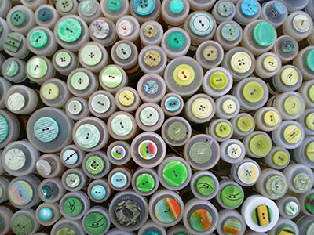
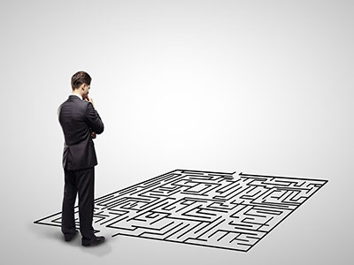
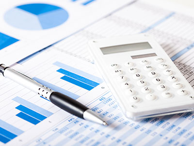

U skladu sa Zakonom o računovodstvu, pravno lice odnosno preduzetnik je obavezan da vrši popis imovine i obaveza.
Pravna lica i preduzetnici dužni su, takođe, da pre sastavljanja finansijskih izveštaja, usaglase međusobna potraživanja i obaveze što se dokazuje odgovarajućom ispravom – IOS (poverilac dostavlja dužniku).
Popis vrši popisna komisija ili jedno lice (u slučaju malog pravnog lica), a Odluku o formiranju popisne komisije odnosno imenovanju lica donosi direktor. U komisiju za popis ne mogu biti određena lica koja rukuju odnosno koja su zadužena za imovinu koja se popisuje (npr.blagajnik, magacioner i sl.) i njihovi neposredni rukovodioci, kao ni lica koja vode analitičku evidenciju te imovine. Direktor odnosno lice koje on ovlasti odgovorno je za organizaciju i pravilnost popisa...
saznaj više
Poslednjim izmenama Zakona o porezu na dobit pravnih lica iz decembra 2014.godine (Sl.Glasnik 142/14), utvrđene su sledeće novine:
Kao rashod u poreskom bilansu priznaju se (pored ranije postojećih) i izdaci za humanitarnu pomoć, odnosno otklanjanje posledica nastalih u slučaju vanredne situacije, a u zbirnom iznosu najviše do 5% od ukupnog prihoda.
Rokovi za podnošenje poreske prijave i poreski bilans kod likvidacije i stečaja su produženi, te su sada 60 dana od dana:
Likvidacija društva se može sprovesti kada društvo ima dovoljno sredstava za namirenje svih svojih obaveza. Odluku o pokretanju likvidacije donosi skupština članova društva. Odlukom se imenuje likvidacioni upravnik.
Likvidacija počinje danom registracije Odluke o likvidaciji u Agenciji za privredne registre i objavljivanjem oglasa o pokretanju likvidacije na APR-u.
Oglas o pokretanju likvidacije objavljuje se na APR-u u trajanju od 90 dana. Ako društvo tokom perioda trajanja oglasa o pokretanju likvidacije i roka za prijavu potraživanja promeni adresu sedišta ili adresu za prijem pošte, taj rok ponovo počinje da teče od dana registracije te promene!!!...
saznaj višeOgranak domaćeg privrednog društva nema svojstvo pravnog lica i predstavlja izdvojeni organizacioni deo društva preko koga se obavlja delatnost.
Društvo je obavezno da ogranak registruje kod Agencije za privredne registre (kao i sve promene podataka o ogranku).
Za registraciju ogranka Agenciji za privredne registra podnosi se: registraciona prijava, Odluka skupštine društva o obrazovanju ogranka (primer odluke možete pronaći na našoj stranici Obrasci), Odluka o imenovanju zastupnika ogranka (ukoliko je različit od zastupnika društva), dokaz o uplati naknade (2.800,00 dinara po ogranku).
Primer Odluke o obrazovanju ogranka možete preuzeti ovde.

Ukoliko ste odlučili da osnujete kompaniju u formi društva za ograničenom odgovornošću, možete se obratiti nama i mi ćemo čitav postupak završtiti za Vas, a Vi se možete baviti bitnijim stvarima.
Ukoliko ipak odlučite da sami sprovedete proceduru osnivanja, neophodno je da preduzmete sledeće korake:

Prilikom osnivanja, pravnom subjektu je ostavljena mogućnost da se opredeli da li će se evidentirati u sistem PDV-a ili ne. Ukoliko procenjujete da ćete u narednih 12 meseci ostvariti promet preko 8.000.000 dinara, zahtev za evidentiranje u PDV možete podneti odmah ili bilo kada u toku godine (s tim da je bitno voditi računa o tome da je neophodno da se evidentirate za PDV čim ostvarite promet veći od 8 miliona dinara).
Obavezu evidentiranja u sistem PDV-a pravni subjekt nema sve dok ne ostvari promet preko 8.000.000.00 dinara u prethodnih godinu dana. Promet mora redovno da se prati, kako se ne bi propustio rok za evidentiranje kod poreske uprave jer su kazne značajne.
Ukoliko procenjujete da će Vaš promet u narednih godinu dana biti manji od 8.000.000,00 dinara, ne morate se evidentirati u sistem PDV-a i Vaši proizvodi/usluge će biti za Vaše kupce...
Ovo je jedna od dilema koja muči veliki broj budućih poslodavaca. Odgovor na ovo pitanje zavisi od delatnosti kojom subjekt namerava da se bavi.
1. Zašto preduzetnik?
Za određene delatnosti za koje je zakonom propisano da nisu u obavezi da vode poslovne knjige i kod kojih je (očekivani) godišnji promet mali, naša preporuka je otvoriti preduzetničku radnju. Porez se u ovom slučaju može plaćati paušalno, te su manji troskovi poslovanja. Stopa poreza iznosi 10%. Novac koji podiže paušalni preduzetnik sa računa nije potrebno pravdati knjigovodstveno (što je kod ostalih privrednih subjekata obavezno).
Preduzetnici koji porez plaćaju paušalno...
saznaj više